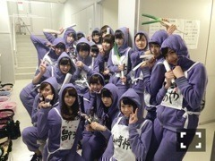

| 2014/06 19 Thu | ソファに住んでる鰐 。578回目 |

髪のけ
みじかくなりました
乃木どこのゴリ押し推薦文
両親からバナナマンさんへの
プレゼント...なんですかあれは！！
いつの間に作っててびっくり。
推薦文採用されてなかったから
ゴリ押しでもなんでもないぜ

グラフィックデザイン
ファッションデザイン
私も両親に負けてられない。
前回、バナナマンさんのロゴを
さりげなく使ってて父喜んでました。
ありがとうございます...！
......
17日間22公演
16人のプリンシパルtrois
無事に終了しました。
気持ち的には、、
やっと終わった
という感じです。
稽古と公演期間
とっっっても長かったです。
今回は脚本福田雄一さんによる
コメディエンヌな舞台。
テーマは笑い。
正直言うと、
笑いに対してとても不安でした。
最も苦手意識があるものだからです。
プリンシパルの代名詞でもある
一幕のオーディション内容。
今回はコントでした。
コントで決めるってどういうこと？
絶対無理だ。もうだめだ。
説明を受けて最初に思いました...
やっぱり結果を残せず、
自分から笑いをつくるって
こんなに難しいのか
と実感しました。
最初はお客さんの目をひくように
変な声とか動きでやってみようとか
思ってたり...
でも後半戦になって、
それが間違ってることに気付いて、
ちゃんと自分の演技で勝負しようと
考えるようになりました。
そうしたら、自分が納得いくような
コントができるようになって、
辛かったけど、楽しくなってきて、
二幕に出れたときももっと自分が
楽しもうと思うようになりました！
二幕で演じたのは
パム
ルイーダ
ポリン姫
キャサリン
ベル
侍女2
マキア
ロザリオ
10役中7役！
侍女1回のみ！
千秋楽はどちらも出ることはできず。
これ以外の
エルザ、エステル、クリスティーヌも
立候補したのですが
激戦区に当たることが多く
なることはできませんでした。
結果的に10役制覇はできなかったけど
10役立候補できてよかった！
去年のプリンシパルdeuxでは
二幕で演じたのは3役だけでしたが、
今回は7役も演じられた。
自分にとっては大きな変化です。
何より勉強になった笑い。
台詞の間、表情全部難しかった。
そしてやっぱり苦手だ。
お客さんがみんな暖かくて
スタッフさん、福田さんが
笑ってくださるととても安心して...
暖かい環境で賑やかな舞台を
つくってくださったみなさんに
本当に感謝しています。
佐藤二朗さんのソニーのコンノも
毎回笑ってたー

千秋楽、二幕を襲撃。
私はぐちゃぐちゃにまるめた
プリンシパルのチラシ二刀流。
これは福田さんが
作ってくださいました笑
一幕の結果が出て
楽屋に戻ったと同時に
声出して大号泣したんです。
その私を見て福田さん大笑いするし笑
おもっきり文句言ってこい！
暴れてこい！
って言ってくれた福田さん。
福田さんの笑い声に
救われた舞台でした。
ありがとうございました！！
......
個人pv予告公開中。

伊藤万理華×関和亮
Type-B収録です。
よろしくお願いします！！
まりか
コメント(431)
2014/06/19 00:30